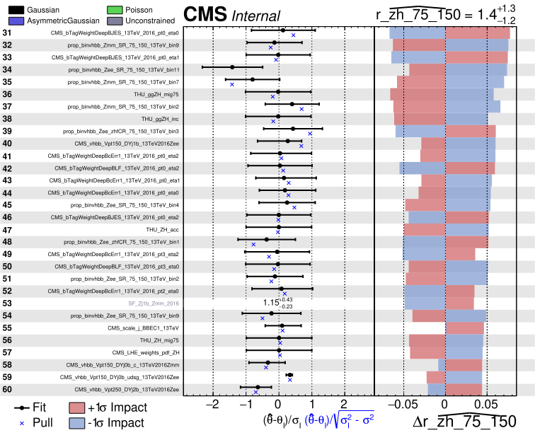
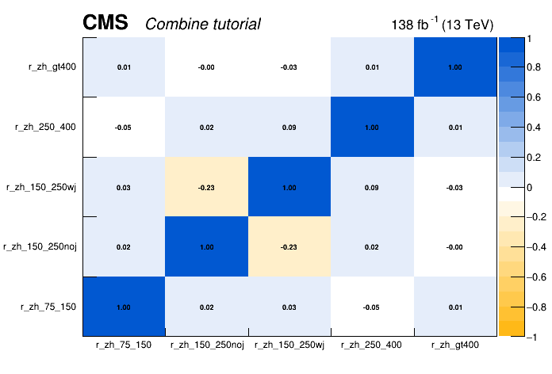

Combine unfolding exercise
Getting started
To get started, you should have a working setup of Combine and CombineHarvester. This setup can be done following any of the installation instructions.
After setting up CMSSW, you can access the working directory for this tutorial which contains all of the inputs and scripts needed to run the unfolding fitting exercise:
cd $CMSSW_BASE/src/HiggsAnalysis/CombinedLimit/data/tutorials/tutorial_unfolding_2023/
Exercise outline
The hands-on exercise is split into seven parts:
1) "Simple" Unfolding Experiment
2) Producing the Migration matrix from the datacards
3) Advanced Unfolding with more detector-level information and control regions
4) Extracting the expected intervals
5) Producing Impacts for multiple POIs
6) Unfold to the generator-level quantities
7) Extracting POI correlations from the FitDiagnostics output
Throughout the tutorial there are a number of questions and exercises for you to complete. These are shown in the boxes like this one.
Note that some additional information on unfolding in Combine are available here, which also includes some information on regularization, which is not discussed in this tutorial.
Analysis overview
In this tutorial we will look at the cross section measurements of on of the SM Higgs processes VH, in H\to b\bar{b} (VHbb) final state.
The measurement is performed within the Simplified Template Cross Section (STXS) framework, which provides the prediction in the bins of generator-level quantities p_{T}(V) and number of additional jets. The maximum likelihood based unfolding is performed to measure the cross section in the generator-level bins defined by STXS scheme. At the detector-level we define appropriate categories to match the STXS bins as closely as possible so that there is a good correspondence between the detector-level observable and the underlying generator-level quantity we are interested in.

Note that for this STXS measurement, as well as measuring the cross-section as a function of the p_{T} of the vector boson, the measurement includes some information on the number of additional jets and is performed over multiple different production modes, for different production processes. However, it is common to focus on a single distribution (e.g. p_{T}) for a signle process, (e.g. t\bar{t}).
In this tutorial we will focus on the ZH production, with the Z boson decaying to charged leptons, and Higgs boson reconstructed with the resolved b\bar{b} pair. We will also use only a part of the Run 2 categories, we will not achieve the same sensitivity as the full analysis. Note that ggZH and ZH production modes are combined in the fit, since it is not possible to resolve them at this stage of the analysis. The STXS categories are defined independently of the Higgs decay channel, to streamline the combinations of the cross section measurement.
In the first part of the tutorial, we will setup a relatively simple unfolding, where there is a single detector-level bin for every generator-level bin we are trying to measure. We will then perform a blind analysis using this setup to see the expected sensitivity.
In this simple version of the analysis, we use a series of datacards, one for each detector-level bin, implemented as a counting experiment. We then combine the datacards for the full measurement. It is also possible to implement the same analysis as a single datacard, passing a histogram with each of the detector-level bins. Either method can be used, depending on which is more practical for the analysis being considered.
In the second part of the tutorial we will perform the same measurement with a more advanced setup, making use of differential distributions per generator-level bin we are trying to measure, as well as control regions. By providing this additional information to the fit, we are able to achieve a better and more robust unfolding result. After checking the expected sensitivity, we will take a look at the impacts and pulls of the nuisance parameters. Then we will unblind and look at the results of the measurement, produce generator-level plots and provide the correlation matrix for our measured observables.
Simplified unfolding
When determining the detector-level binning for any differential analysis the main goal is to chose a binning that distinguishes contributions from the various generator-level bins well. In the simplest case it can be done with the cut-based approach, i.e. applying the same binning for the detector-level observables as is being applied to the generator-level quantities being measured. In this case, that means binning in p_{T}(Z) and n_{\text{add. jets}}. Due to the good lepton p_{T} resolution we can follow the original STXS scheme quite closely with the detector-level selection, with one exception, it is not possible to access the very-low transverse momenta bin p_{T}(Z)<75 GeV.
In counting/regions dicrectory you can find the datacards with five detector-level categories, each targetting a corresponding generator-level bin. Below you can find an example of the datacard for the detector-level bin with p_{T}(Z)>400 GeV.
imax 1 number of bins
jmax 9 number of processes minus 1
kmax * number of nuisance parameters
--------------------------------------------------------------------------------
--------------------------------------------------------------------------------
bin vhbb_Zmm_gt400_13TeV
observation 12.0
--------------------------------------------------------------------------------
bin vhbb_Zmm_gt400_13TeV vhbb_Zmm_gt400_13TeV vhbb_Zmm_gt400_13TeV vhbb_Zmm_gt400_13TeV vhbb_Zmm_gt400_13TeV vhbb_Zmm_gt400_13TeV vhbb_Zmm_gt400_13TeV vhbb_Zmm_gt400_13TeV vhbb_Zmm_gt400_13TeV vhbb_Zmm_gt400_13TeV
process ggZH_lep_PTV_GT400_hbb ZH_lep_PTV_GT400_hbb ZH_lep_PTV_250_400_hbb ggZH_lep_PTV_250_400_hbb Zj1b Zj0b_c Zj0b_udsg VVLF Zj2b VVHF
process -3 -2 -1 0 1 2 3 4 5 6
rate 0.0907733 0.668303 0.026293 0.00434588 3.78735 2.58885 4.09457 0.413716 7.02731 0.642605
--------------------------------------------------------------------------------
You can see the contributions from various background processes, namely Z+jets, t\bar{t} and the single top, as well as the signal processes (ggZH and ZH) corresponding to the STXS scheme discussed above. Note that for each generator-level bin being measured, we assign a different process in combine. This is so that the signal strengths for each of their contributions can float independently in the measurement. Also note, that due to migrations, each detector-level bin will receive contributions from multiple generator-level bins.
One of the most important stages in the analysis design, is to make sure that the detector-level categories are well-chosen to target the corresponding generator-level processes.
To explicitly check the correspondance between detector- and generator-level, one can plot the contributions of each of the generator-level bins in all of the detector-level bins. You can use the script provided in the tutorial git-lab page. This script uses CombineHarvester to loop over detector-level bins, and get the rate at which each of the signal processes (generator-level bins) contributes to that detector-level bin; which is then used to plot the migration matrix.
python scripts/get_migration_matrix.py counting/combined_ratesOnly.txt

The migration matrix shows the generator-level bins on the x-axis and the corresponding detector-level bins on the y-axis. The entries are normalized such that the sum of all contributions for a given generator-level bin sum up to 1. With this convention, the numbers in each bin represent the probability that an event from a given generator-level bin is reconstructed in a given detector-level bin if it is reconstructed at all within the considered bins.
Now that we checked the response matrix we can attempt the maximum likelihood unfolding. We can use the multiSignalModel physics model available in Combine, which assigns a parameter of interest poi to a process p within a bin b using the syntax --PO 'map=b/p:poi[init, min, max]' to linearly scale the normalisation of this process under the parameter of interest (POI) variations. To create the workspace we can run the following command:
text2workspace.py -m 125 counting/combined_ratesOnly.txt -P HiggsAnalysis.CombinedLimit.PhysicsModel:multiSignalModel --PO verbose --PO 'map=.*/.*ZH_lep_PTV_75_150_hbb:r_zh_75_150[1,-5,5]' --PO 'map=.*/.*ZH_lep_PTV_150_250_0J_hbb:r_zh_150_250noj[1,-5,5]' --PO 'map=.*/.*ZH_lep_PTV_150_250_GE1J_hbb:r_zh_150_250wj[1,-5,5]' --PO 'map=.*/.*ZH_lep_PTV_250_400_hbb:r_zh_250_400[1,-5,5]' --PO 'map=.*/.*ZH_lep_PTV_GT400_hbb:r_zh_gt400[1,-5,5]' -o ws_counting.root
In the example given above a signal POI is assigned to each generator-level bin independent of detector-level bin. This allows the measurement to take into account migrations.
To extract the measurement let's run the initial fit first using the MultiDimFit method implemented in Combine to extract the best-fit values and uncertainties on all floating parameters:
combineTool.py -M MultiDimFit --datacard ws_counting.root --setParameters r_zh_250_400=1,r_zh_150_250noj=1,r_zh_75_150=1,r_zh_150_250wj=1,r_zh_gt400=1 --redefineSignalPOIs r_zh_75_150,r_zh_150_250noj,r_zh_150_250wj,r_zh_250_400,r_zh_gt400 -t -1
With the option
-t -1we setCombineto fit the asimov dataset instead of actual data. The--setParameters <param>=<value>set the initial value of parameter named .--redefineSignalPOIs r_zh_75_150,r_zh_150_250noj,r_zh_150_250wj,r_zh_250_400,r_zh_gt400set the POIs to the comma-separated list, instead of the default oner.
While the uncertainties on the parameters of interest (POIs) can be extracted in multiple ways, the most robust way is to run the likelihood scans for a POI corresponding to each generator-level bin, it allows you to spot discontinuities in the likelihood shape in case of problems with the fit or the model.
combineTool.py -M MultiDimFit --datacard ws_counting.root -t -1 --setParameters r_zh_250_400=1,r_zh_150_250noj=1,r_zh_75_150=1,r_zh_150_250wj=1,r_zh_gt400=1 --redefineSignalPOIs r_zh_75_150,r_zh_150_250noj,r_zh_150_250wj,r_zh_250_400,r_zh_gt400 --algo=grid --points=100 -P r_zh_75_150 --floatOtherPOIs=1 -n scan_r_zh_75_150
Now we can plot the likelihood scan and extract the expected intervals.
python scripts/plot1DScan.py higgsCombinescan_r_zh_75_150.MultiDimFit.mH120.root -o r_zh_75_150 --POI r_zh_75_150
- Repeat for all POIs
Shape analysis with control regions
One of the advantages of the maximum likelihood unfolding is the flexibility to choose the analysis observable and include more information on the event kinematics, consequently improving the analysis sensitivity. This analysis benefits from the shape information of the DNN output trained to differentiate the VH(bb) signal from the SM backgrounds.
The datacards for this part of the exercise located full_model_datacards/, where you can find a separate datacard for each region within full_model_datacards/regions directory and also a combined datacard full_model_datacards/comb_full_model.txt. In this case, each of the detector-level bins being used in the unfolding above is now split into multiple bins according to the DNN output score. This provides extra discrimination power to separate the signal from background and improve the measurement.
As you will find, the datacards also contain several background processes. To control them properly we will also add regions enriched in the respective backgrounds. Then we can define a common set of rate parameters for signal and control regions to scale the rates or other parameters affecting their shape.
For the shape datacards one has to specify the mapping of histograms and channels/processes as given described below:
shapes [process] [channel] [file] [nominal] [systematics_templates]
Then the shape nuisance parameters can be defined in the systematics block in the datacard. More details can be found in Combine documentation pages.
In many CMS analyses there are hundreds of nuisance parameters corresponding to various source of systematics.
When we unfold to the generator-level quantities we should remove the nuisances affecting the rate of the generator-level bins, i.e. when measuring a given cross-section such as \sigma_{\textrm{gen1}}, the nuisance parameters should not change the value of that parameter itself; they should only change the relationship between that parameter and the observations. This means that, for example, effects of renormalization and factorization scales on the generator-level cross section within each bin need to be removed. Only their effects on the detector-level distribution through changes of shape within each bin as well as acceptances and efficiencies should be considered.
For this analysis, that means removing the lnN nuisance parameters: THU_ZH_mig* and THU_ZH_inc; keeping only the acceptance shape uncertainties: THU_ZH_acc and THU_ggZH_acc, which do not scale the inclusive cross sections by construction. In this analysis the normalisation effects in the THU_ZH_acc and THU_ggZH_acc templates were already removed from the shape histograms. Removing the normalization effects can be achieved by removing them from the datacard. Alternatively, freezing the respective nuisance parameters with the option --freezeParameters par_name1,par_name2. Or you can create a group following the syntax given below at the end of the combined datacard, and freeze the parameters with the --freezeNuisanceGroups group_name option.
[group_name] group = uncertainty_1 uncertainty_2 ... uncertainty_N
Now we can create the workspace using the same multiSignalmodel as before:
text2workspace.py -m 125 full_model_datacards/comb_full_model.txt -P HiggsAnalysis.CombinedLimit.PhysicsModel:multiSignalModel --PO verbose --PO 'map=.*/.*ZH_lep_PTV_75_150_hbb:r_zh_75_150[1,-5,5]' --PO 'map=.*/.*ZH_lep_PTV_150_250_0J_hbb:r_zh_150_250noj[1,-5,5]' --PO 'map=.*/.*ZH_lep_PTV_150_250_GE1J_hbb:r_zh_150_250wj[1,-5,5]' --PO 'map=.*/.*ZH_lep_PTV_250_400_hbb:r_zh_250_400[1,-5,5]' --PO 'map=.*/.*ZH_lep_PTV_GT400_hbb:r_zh_gt400[1,-5,5]' --for-fits --no-wrappers --X-pack-asympows --optimize-simpdf-constraints=cms --use-histsum -o ws_full.root
As you might have noticed we are using a few extra versions
--for-fits --no-wrappers --X-pack-asympows --optimize-simpdf-constraints=cms --use-histsumto create a workspace. They are needed to construct a more optimised pdf using theCMSHistSumclass implemented in Combine to significantly lower the memory consumption.
- Following the instructions given earlier, create the workspace and run the initial fit with
-t -1.
Since this time the datacards include shape uncertainties as well as additional categories to improve the background description the fit might take much longer, but we can submit jobs to a batch system by using the combine tool and have results ready to look at in a few minutes.
combineTool.py -M MultiDimFit -d ws_full.root --setParameters r_zh_250_400=1,r_zh_150_250noj=1,r_zh_75_150=1,r_zh_150_250wj=1,r_zh_gt400=1 --redefineSignalPOIs r_zh_75_150,r_zh_150_250noj,r_zh_150_250wj,r_zh_250_400,r_zh_gt400 -t -1 --X-rtd FAST_VERTICAL_MORPH --algo=grid --points=50 --floatOtherPOIs=1 -n .scans_blinded --job-mode condor --task-name scans_zh --split-points 1 --generate P:n::r_zh_gt400,r_zh_gt400:r_zh_250_400,r_zh_250_400:r_zh_150_250wj,r_zh_150_250wj:r_zh_150_250noj,r_zh_150_250noj:r_zh_75_150,r_zh_75_150
The option
--X-rtd FAST_VERTICAL_MORPHis added here and for allcombineTool.py -M MultiDimFit ...to speed up the minimisation.The job submission is handled by the
CombineHarvester, the combination of options--job-mode condor --task-name scans_zh --split-points 1 --generate P:n::r_zh_gt400,r_zh_gt400:r_zh_250_400,r_zh_250_400:r_zh_150_250wj,r_zh_150_250wj:r_zh_150_250noj,r_zh_150_250noj:r_zh_75_150,r_zh_75_150will submit the jobs to HTCondor for each POI. The--generateoption is is being used to automatically generate jobs attaching the options-P <POI> -n <name>with each of the pairs of values<POI>,<name>specified between the colons. You can add--dry-runoption to create the submissions files first and check them, and then submit the jobs withcondor_submit condor_scans_zh.sub.If you are running the tutorial from a cluster where HTCondor is not available you can also submit the jobs to the slurm system, just change the
--job-mode condorto--job-mode slurm.
After all jobs are completed we can combine the files for each POI:
for p in r_zh_75_150 r_zh_150_250noj r_zh_150_250wj r_zh_250_400 r_zh_gt400
do
hadd -k -f scan_${p}_blinded.root higgsCombine.scans_blinded.${p}.POINTS.*.MultiDimFit.mH120.root
done
And finally plot the likelihood scans
python scripts/plot1DScan.py scan_r_zh_75_150_blinded.root -o scan_r_zh_75_150_blinded --POI r_zh_75_150 --json summary_zh_stxs_blinded.json

Impacts
One of the important tests before we move to the unblinding stage is to check the impacts of nuisance parameters on each POI. For this we can run the combineTool.py with -M Impacts method. We start with the initial fit, which should take about 20 minutes (good time to have a coffee break!):
combineTool.py -M Impacts -d ws_full.root -m 125 --robustFit 1 --doInitialFit --redefineSignalPOIs r_zh_75_150,r_zh_150_250noj,r_zh_150_250wj,r_zh_250_400,r_zh_gt400 --X-rtd FAST_VERTICAL_MORPH
Note that it is important to add the option
--redefineSignalPOIs [list of parameters], to produce the impacts for all POIs we defined when the workspace was created with themultiSignalModel.
After the initial fit is completed we can perform the likelihood scans for each nuisance parameter. We will submit the jobs to the HTCondor to speed up the process.
combineTool.py -M Impacts -d ws_full.root -m 125 --robustFit 1 --doFits --redefineSignalPOIs r_zh_75_150,r_zh_150_250noj,r_zh_150_250wj,r_zh_250_400,r_zh_gt400 --job-mode condor --task-name impacts_zh --X-rtd FAST_VERTICAL_MORPH
Now we can combine the results into the .json format and use it to produce the impact plots.
combineTool.py -M Impacts -d ws_full.root -m 125 --redefineSignalPOIs r_zh_75_150,r_zh_150_250noj,r_zh_150_250wj,r_zh_250_400,r_zh_gt400 --output impacts.json
plotImpacts.py -i impacts.json -o impacts_r_zh_75_150 --POI r_zh_75_150
 * Do you observe differences in impacts plots for different POIs, do these differences make sense to you?
Unfolded measurements
Now that we studied the nuisance parameter impacts for each POI, we can finally perform the measurement. Note that for the purposes of the tutorial, we are skipping further checks and validation that you should do on your analysis. Namely the goodness of fit test and the post-fit plots of folded observables. Both of these checks were detailed in the previous exercises, which you can find under the following link.
At this stage we'll run the MultiDimFit again scanning each POI to calculate the intervals, but this time we'll remove the -t -1 option to extract the unblinded results.
Also since we want to unfold the measurements to the generator-level observables, i.e. extract the cross sections, we remove the theoretical uncertainties affecting the rates of signal processes, we can do this be freezing them --freezeNuisanceGroups <group_name>, using the group_name you assigned earlier in the tutorial.
Now plot the scans and collect the measurements in the json file summary_zh_stxs.json.
python scripts/plot1DScan.py scan_r_zh_75_150.root -o r_zh_75_150 --POI r_zh_75_150 --json summary_zh_stxs.json

Repeat the same command for other POIs to fill the summary_zh_stxs.json, which can then be used to make the cross section plot by multiplying the standard model cross sections by the signal strengths' best-fit values as shown below.
python scripts/make_XSplot.py summary_zh_stxs.json

POI correlations
In addition to the cross-section measurements it is very important to publish covariance or correlation information of the measured cross sections. This allows the measurement to be properly intepreted or reused in combined fits.
The correlation matrix or covariance matrix can be extracted from the results after the fit. Here we can use the FitDiagnostics or MultiDimFit method.
combineTool.py -M FitDiagnostics --datacard ws_full.root --setParameters r_zh_250_400=1,r_zh_150_250noj=1,r_zh_75_150=1,r_zh_150_250wj=1,r_zh_gt400=1 --redefineSignalPOIs r_zh_75_150,r_zh_150_250noj,r_zh_150_250wj,r_zh_250_400,r_zh_gt400 --robustHesse 1 -n .full_model --X-rtd FAST_VERTICAL_MORPH
Then the RooFitResult, containing correlations matrix, can be found in the fitDiagnostics.full_model.root file under the name fit_s. The script plotCorrelations_pois.py from the exercise git-lab repository can help to plot the correlation matrix.
python scripts/plotCorrelations_pois.py -i fitDiagnostics.full_model.root:fit_s -p r_zh_75_150,r_zh_150_250noj,r_zh_150_250wj,r_zh_250_400,r_zh_gt400
